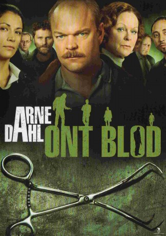
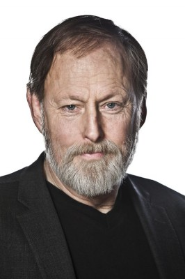

#8002 Arne Dahl 2 - Böses But
 
 IMDB-Wertung: 6.8 / 10
IMDB-Wertung: 6.8 / 10  Metascore: 0
Metascore: 0 
An American serial killer is on board a plane from New York to Stockholm. Without a proper identification and with great urgency A-group try to locate this passenger before Sweden inadvertently imports it's first American serial killer. The serial killer enters Sweden, and very soon he begins his killing spree. His methods are blood thirsty and can be traced back to the Vietnam War. A collaboration with the FBI begins in an desperate attempt to catch him.
Jahr: 2012
Dauer: 110 Minuten
FSK:
Land: Schweden Studio: AXN MysteryTonspuren:
Untertitel:
Auflösung: 1080p (1920x1080) Größe: 8949 MB
Genre: Krimi, TV-Serie
Regisseur: Mani Maserrat Agah
Drehbuch: Filmlance International AB
Soundtrack:
Darsteller:
- Malin Arvidsson als Kerstin Holm 2 episodes, 2012
-  Claes Ljungmark als Viggo Norlander 2 episodes, 2012
 Shanti Roney als Paul Hjelm 2 episodes, 2012
Shanti Roney als Paul Hjelm 2 episodes, 2012 Matias Varela als Jorge Chavez 2 episodes, 2012
Matias Varela als Jorge Chavez 2 episodes, 2012- Sandra Andreis als Kvinnlig CIA-agent 2 episodes, 2012
- Filip Berg als Olle Malmqvist 2 episodes, 2012
 Frida Hallgren als Cilla Hjelm 2 episodes, 2012
Frida Hallgren als Cilla Hjelm 2 episodes, 2012 George Harris als Ray Larner 2 episodes, 2012
George Harris als Ray Larner 2 episodes, 2012 Jimmy Lindström als Bartender 2 episodes, 2012
Jimmy Lindström als Bartender 2 episodes, 2012- Shebly Niavarani als Erik Lindberger 2 episodes, 2012
 Bo Svenson als Daniel Brink / ... 2 episodes, 2012
Bo Svenson als Daniel Brink / ... 2 episodes, 2012- Victor von Schirach als Tommy Nyberg 2 episodes, 2012
- Anna Åström als Tanja Nyberg 2 episodes, 2012
- Robert Prowse als Ray Ban Man (uncredited) 2 episodes, 2012
- Ethel Fisher als Liten gammal dam (uncredited) unknown episodes
- Martin Rutegård als Läkare (uncredited) unknown episodes
- Irene Lindh als Jenny Hutin 2 episodes, 2012
- Magnus Samuelsson als Gunnar Nyberg 2 episodes, 2012
- Niklas Åkerfelt als Arto Söderstedt 2 episodes, 2012
- Jordi Almeida als Manlig CIA-agent 2 episodes, 2012
- Sven Angleflod als Bårman 2 episodes, 2012
- Källa Bie als Justine Lindberger 2 episodes, 2012
- Mats Blomgren als Dan Mörner 2 episodes, 2012
- Gustav Deinoff als Akalla Gurra 2 episodes, 2012
- Claes Elfsberg als Nyhetsankare 2 episodes, 2012
- Lars-Erik Friberg als Lars-Erik Hassel 2 episodes, 2012
- Christer Hall als Herman Bengtsson 2 episodes, 2012
- Staffan Kihlbom Thor als Poliskollega 2 episodes, 2012
- Carl Kjellgren als Stefan Back 2 episodes, 2012
- Henrik Knutsson als Väktare 2 episodes, 2012
- Malena Laszlo als Bea Lindholm 2 episodes, 2012
- Helena Lewin als Tina Nyberg 2 episodes, 2012
- Philip Lithner als Tom Berg 2 episodes, 2012
- Joel Lundgren als Plit 2 episodes, 2012
- Rania Mohsen als Fatima 2 episodes, 2012
- Wisam Odish als Masid 2 episodes, 2012
- Philip Panov als Fredrik Fast 2 episodes, 2012
- Sannamari Patjas als Astrid 2 episodes, 2012
- Mats Qviström als Anders Wahlberg 2 episodes, 2012
- Stephen Rappaport als Steve Garner 2 episodes, 2012
- Mohamed Said als Mehmet 2 episodes, 2012
- César Sarachu als Städaren 2 episodes, 2012
- Kristoffer Stålbrand als Lamar 2 episodes, 2012
- Mahmut Suvakci als Andreas Gallano 2 episodes, 2012
- Lotti Törnros als Bodil Lundberg 2 episodes, 2012
- Bisse Unger als Danne Hjelm 2 episodes, 2012
- Letitia Ward als Kvinna i flygdisk 2 episodes, 2012
- Pierre Wilkner als Klackbarsägare 2 episodes, 2012
- Patrick Jakobsson als Väktare 1 episode, 2012
- Phil Bernardin als FBI-agent #2 (uncredited) 2 episodes, 2012
Datei: X:\Person\Arne Dahl\Arne Dahl 2 - Böses But (2012, FSK, 1920x1080).mkv seit 10.01.2018
Festplatte: HD Collection-7+mehr(A-Z)+Person
 Alle Filme aus Gruppe 'Person\Arne Dahl'
Alle Filme aus Gruppe 'Person\Arne Dahl'